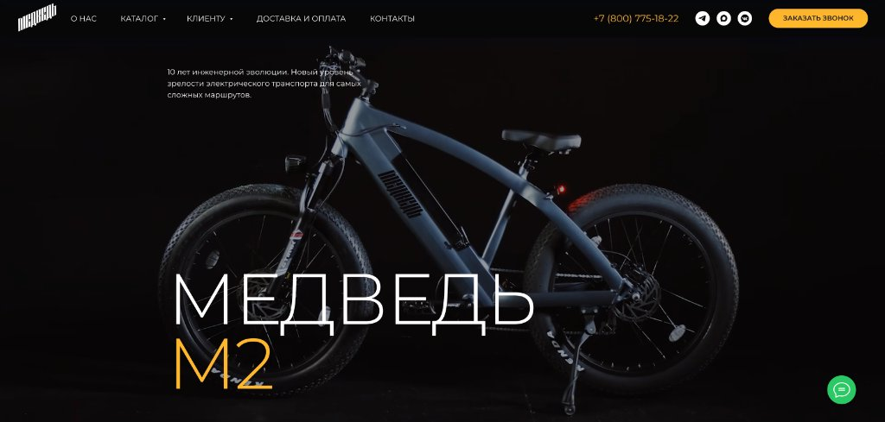
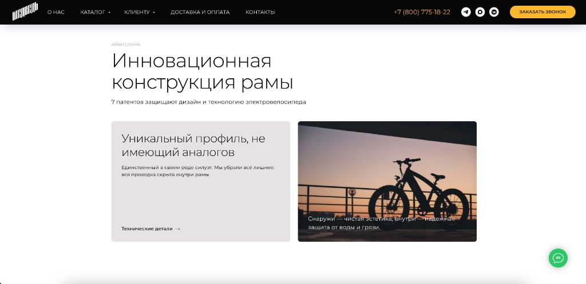
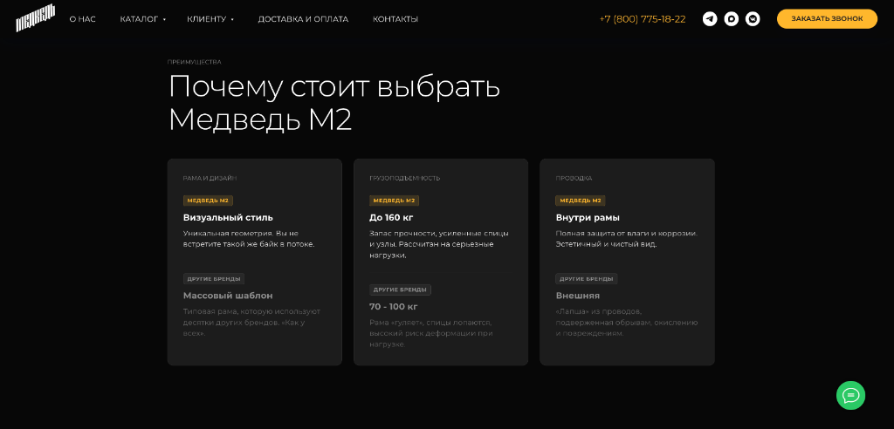
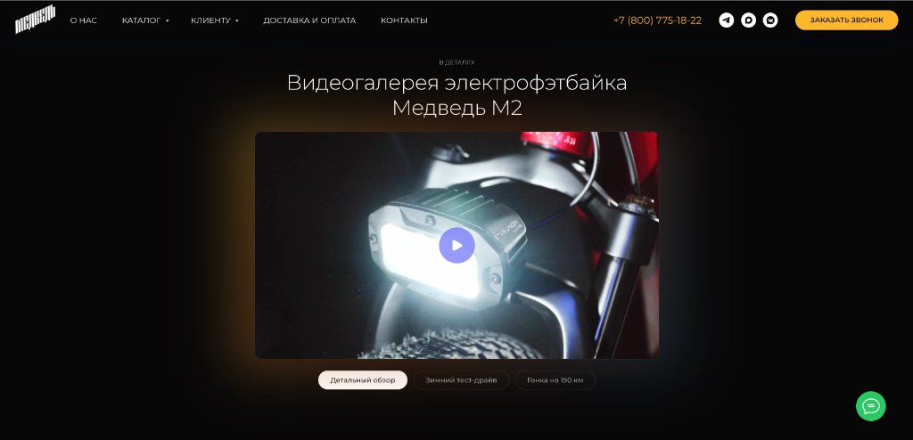
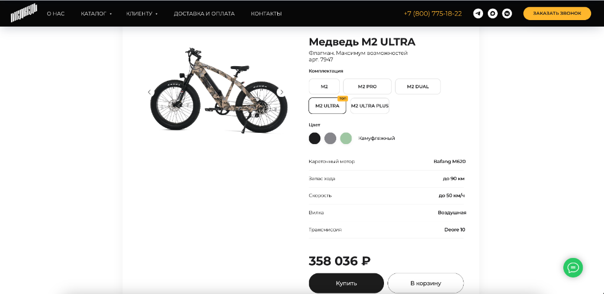
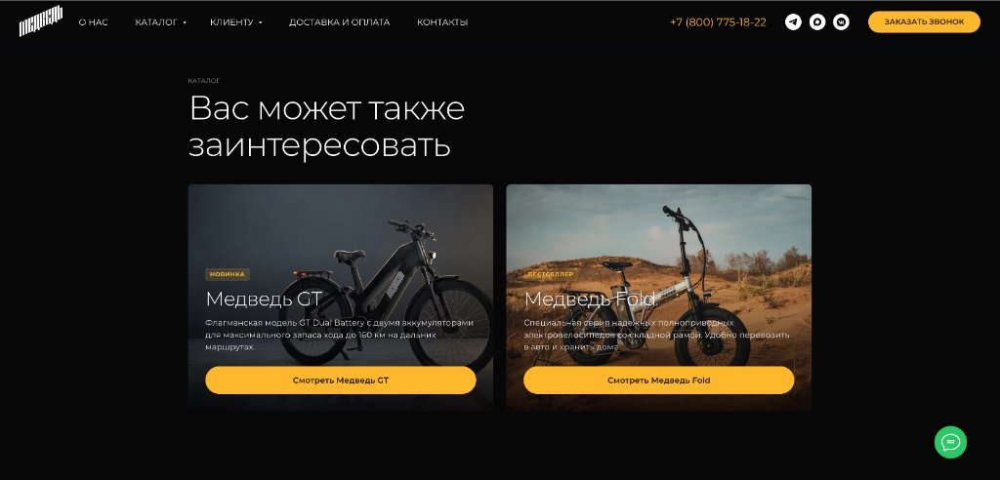
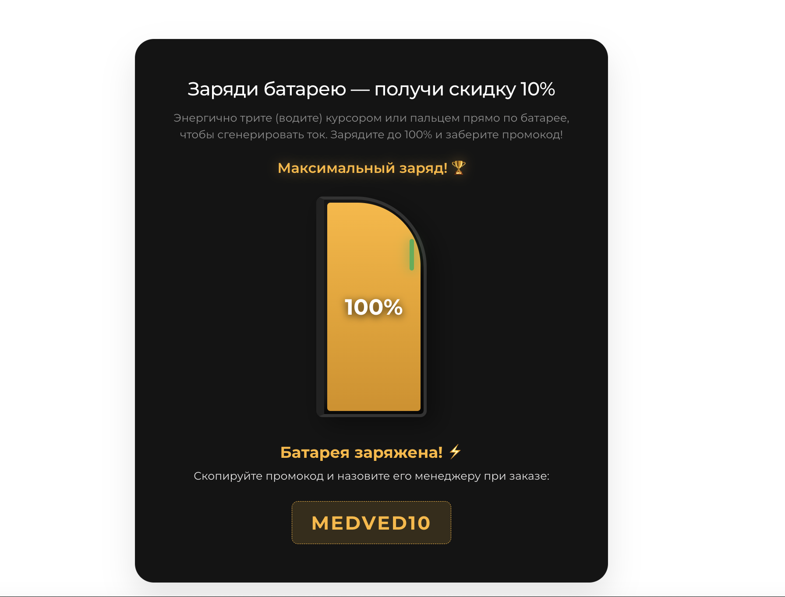
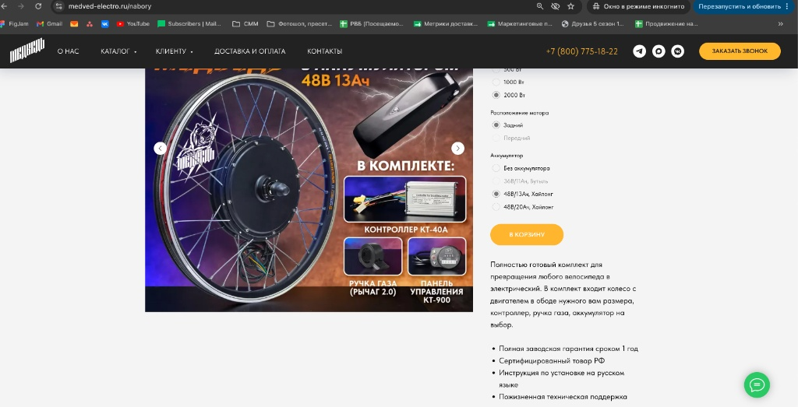

Переработка сайта «Медведь Электро»: интерактивный флагман М2, Snap Scroll и рост конверсии в 3.1 раза
Стек & Технологии
Tilda Publishing, HTML5, CSS3 (.aker-theme), Vanilla JavaScript, IntersectionObserver API, MutationObserver, Chrome DevTools реверс-инжиниринг, amoCRM API, Яндекс Метрика
Ключевые результаты флагманского лендинга М2 и сайта
- Конверсия лендинга М2 (CR)
- 3,8%
- Рост в 3,1 раза (до переработки — 1,2%)
- Отказы на странице М2
- 32%
- Снижение более чем в 2 раза (было 68% из-за поп-апов в лоб)
- Время на странице М2
- 02:20 мин
- +210% за счёт кинематографичного Snap Scroll
- Потери лидов в amoCRM
- 0%
- Устранён баг потери ~18% заявок из-за конфликта скриптов

Контекст и вызов проекта
Бренд «Медведь Электро» собирает и продаёт премиальный электротранспорт: мощные электрофэтбайки (флагманы «Медведь М2», «Медведь GT» с чеком до 690 000 ₽), складные модели «Fold» и надёжные Li-ion аккумуляторы с доставкой по всей России. Для такого продукта типовой лендинг с дешёвыми кнопками не работает — покупатель должен почувствовать технологичность и надёжность техники с первого экрана.
Исходный сайт был собран на стандартных шаблонных блоках Tilda Publishing. Платформа перестала отвечать требованиям премиального позиционирования: верстка выглядела перегруженной, мобильная адаптация сбоила, всплывающие окна раздражали пользователей, а кастомные формы конфликтовали с системными скриптами и теряли заявки. Задача — глубоко переработать сайт и сделать из посадочной страницы М2 флагманский продукт корпоративного уровня.
Точка А: проблемы старых страниц («До»)
Аудит исходных страниц флагманских моделей и каталога вскрыл 4 критические проблемы:
- Отсутствие премиального вида: стандартный дизайн Тильды выглядел типовым интернет-магазином запчастей, а не презентацией авторских электробайков за 200–600 тыс. рублей.
- Слепые поп-апы «в лоб»: акции выпрыгивали по таймеру через 15–60 секунд после входа. Пользователь ещё не успел понять, что это за техника и сколько она стоит, как экран блокировался окном «Оставьте телефон». Итог — 68% отказов (Bounce Rate).
- Громоздкие галереи и «простыни» текста: на страницах товаров выводилась неуправляемая лента превьюшек, а характеристики подавались длинным монолитом текста без визуальной структуры.
- Хаос в amoCRM и потеря ~18% лидов: стандартный скрипт
tilda-forms.jsблокировал отправку кастомных форм через React-валидаторы. Заявки терялись, а дошедшие падали с бессмысленным заголовкомLead from: medved-electro.ruбез передачиvisitor_uid.


Флагманский проект: интерактивный лендинг «Медведь М2»
Посадочная страница для электрофэтбайка «Медведь М2» стала главным объектом инженерной и маркетинговой переработки. Мы превратили стандартный шаблон Тильды в бесшовную интерактивную презентацию корпоративного уровня:
1. Архитектура Snap Scroll, патентная защита и подача преимуществ
Был написан кастомный движок прокрутки (mainScrollWrapper), реализующий механику scroll-snap. Каждый экран автоматически фиксируется по центру окна: первый экран с полноэкранным видео и ключевыми цифрами скорости, экран узлов рамы и подвески, интерактивный конфигуратор и блок полевых видеотестов.
Чтобы подчеркнуть инженерную уникальность байка, структурировали информацию на два ключевых экрана: демонстрация патентованной конструкции рамы (внутренняя проводка, грязезащита) и прямое Bento-сравнение с типовыми байками других брендов (усиленная грузоподъёмность до 160 кг против 70–100 кг у конкурентов).


2. Умный поведенческий триггер спецпредложения (IntersectionObserver)
Вместо раздражающего поп-апа, выскакивающего через 30–60 секунд вслепую, мы внедрили осознанную поведенческую механику. Пользователь получает предложение скидки строго в момент наивысшей заинтересованности:
- Скрипт на базе IntersectionObserver API непрерывно отслеживает прокрутку до блока интерактивной видеогалереи (
#rec_video_gallery), где пользователь может выбрать детальный обзор, зимний тест-драйв в сугробах или гонку на 150 км. - Как только секция видео появляется в зоне видимости хотя бы на 10%, запускается скрытый 15-секундный таймер. Если пользователь задержался и внимательно изучает видео — ему открывается персональное спецпредложение.
- Для исключения навязчивости добавлена запись в
sessionStorageбраузера: окно гарантированно показывается не более одного раза за визит.
const targetBlock = document.querySelector('#rec_video_gallery');
let popupTimer = null;
const observer = new IntersectionObserver((entries) => {
entries.forEach(entry => {
if (entry.isIntersecting && !sessionStorage.getItem('m2_promo_shown')) {
// Запуск таймера только при осознанном просмотре видеообзора
popupTimer = setTimeout(() => {
showPromoPopup();
sessionStorage.setItem('m2_promo_shown', 'true');
}, 15000);
} else {
clearTimeout(popupTimer);
}
});
}, { threshold: 0.1 });
observer.observe(targetBlock);

3. Интерактивный конфигуратор флагмана «Медведь M2 ULTRA»
Для премиального сегмента критически важно дать покупателю возможность «собрать» технику под себя. Мы разработали интерактивный конфигуратор флагманской версии «Медведь M2 ULTRA» (358 036 ₽):
- Мгновенное переключение комплектаций (M2, M2 PRO, M2 DUAL, M2 ULTRA, M2 ULTRA PLUS) с выделением бейджем «ТОП».
- Интерактивный выбор цвета (черный, графит, камуфляжный) с автоматической сменой 3D-рендера байка в галерее.
- Динамическое отображение ключевых ТТХ: кареточный мотор Bafang M620, запас хода до 90 км, скорость до 50 км/ч, воздушная вилка и трансмиссия Shimano Deore 10.
- Бесшовные кнопки чекаута («Купить» в один клик и «В корзину») без ухода со страницы.

4. Экосистема бренда и кросс-сейл (Медведь GT и Fold)
Чтобы не терять пользователей, которым нужен другой формат техники, внизу страницы внедрили блок кросс-сейла со связкой на сопутствующие линейки:
- Новинка «Медведь GT»: флагман GT Dual Battery с двумя аккумуляторами для сверхдальних маршрутов до 160 км.
- Бестселлер «Медведь Fold»: серия надёжных полноприводных электровелосипедов со складной рамой для удобной перевозки в авто и хранения в квартире.

5. Решение мобильной коллизии со скроллом
На этапе тестирования выявили коллизию: на десктопе работал фиксированный скролл-контейнер (100vh), а на смартфонах ради комфортного чтения мы переключали его в height: auto. Из-за этого на смартфонах видеогалерея физически находилась в DOM-дереве с первых секунд, и таймер срабатывал сразу при входе.
Решение: написали динамическую подмену root для наблюдателя. Скрипт на лету проверяет ширину экрана (window.innerWidth <= 768) и переключает отслеживание с кастомного контейнера на стандартный системный viewport браузера, гарантируя точный тайминг на любых смартфонах.
Этап 2. Редизайн Каталога: Bento-стиль и теневое проксирование Тильды
Параллельно с лендингом М2 требовалось навести порядок в общем каталоге аккумуляторов и комплектующих. Мы применили карточный Bento-стиль (.aker-theme):
- Быстрые фильтры по параметрам: внедрили переключатели по вольтажу (36V, 48V, 60V) и типу корпуса («Акула», «В треугольник», «Багажник»). Покупатель сразу отсекает неподходящие модели.
- Теневое проксирование каталога: чтобы сохранить штатную корзину и чекаут Тильды, стандартный блок магазина программно скрыли (
data-record-type="754"), а при клике по красивой кастомной кнопке скрипт эмулирует клик по скрытой системной кнопке Тильды.

Этап 3. Интерактивная геймификация «Заряди аккумулятор»
Чтобы раскачать холодный входящий трафик, внедрили интерактивную игру прямо на странице каталога аккумуляторов:
- Пользователь пальцем на смартфоне активно свайпает и «трёт» батарею на экране.
- При трении летят реалистичные электрические искры (генератор частиц Canvas/CSS), сегменты батареи поочерёдно загораются от красного к неоново-зелёному со срабатыванием виброотклика смартфона.
- При 100% заряда запускается салют и открывается поп-ап с персональным промокодом на 10% и быстрыми кнопками перехода в мессенджеры (Telegram/WhatsApp).


Этап 4. Реверс-инжиниринг карточек товаров через DevTools
На страницах комплектаций электробайков стандартный движок Тильды перекрашивал текст в белый цвет на светлом фоне и упорно не позволял отключить системную ленту превью-слайдов. Через панель Chrome DevTools мы локализовали системный контейнер .t-slds__thumbsbullet-wrapper, скрыли паразитную галерею и вернули хлебным крошкам читаемый фирменный цвет.


Этап 5. Безотказный мост с amoCRM (Метод «айкидо»)
Попытки кастомизировать формы Тильды вызывали конфликт со скриптом tilda-forms.js, из-за чего до 18% лидов просто не доходили до отдела продаж. Мы решили проблему через метод «айкидо»:
- Стандартная форма Тильды выносится за экран через
left: -9999px(неdisplay: none, чтобы React-капча отрендерилась штатно). - При отправке кастомной формы JS-мост переносит данные в скрытые поля и программно триггерит события
dispatchEvent(new Event('input')). - В amoCRM заменен системный макрос на кастомный
{{lead_name}}: заявки стали приходить с понятными заголовками («Оформлен заказ Медведь М2», «Тест-драйв М2», «Заявка на скидку — Попап 15 сек») и гарантированной передачейvisitor_uidи cookies Метрики.

_ym_uid, tmr_lvid) и параметра visitor_uid для прозрачной сквозной аналитики от рекламы до сделки.
Сводные данные: результаты «До / После»
| Метрика | До оптимизации | После оптимизации | Динамика |
|---|---|---|---|
| Конверсия лендинга М2 (CR) | 1,2% (типовой шаблон, уход в отказ) | 3,8% (Snap Scroll + умный триггер цен) | Рост в 3,1 раза |
| Конверсия каталога (CR) | 1,4% (перегруженные карточки) | 3,9% (Bento-сетка + геймификация) | Рост в 2,8 раза |
| Отказы на странице М2 | 68% (агрессивные поп-апы в лоб) | 32% (показ строго после просмотра видео) | Снижение на 36% |
| Среднее время на сайте | 00:45 мин | 02:20 мин | +210% вовлечения |
| Потери лидов (брак скриптов) | ~18% (конфликт React в Tilda) | 0% (эмуляция ввода и скрытый мост) | Устранено полностью |
| Стоимость лида (CPL) | 1 150 ₽ | 410 ₽ | Снижение на 64% |
| Лиды через мессенджеры | < 5% | ~40% (быстрый переход в Telegram) | Рост в 8 раз |
Связка с контекстной рекламой и главный вывод
Интерактивная посадочная страница «Медведь М2» стала ключевым конвертером для рекламного трафика из Яндекс Директа. На странице с понятной визуализацией комплектаций, прозрачными ценами и умным захватом контактов алгоритмы Директа смогли быстро обучиться и снизить стоимость заявки до 407 ₽ (подробный разбор рекламы — в кейсе по оптимизации Директа «Медведь Электро»).
Главный вывод
В сложных нишах с высоким чеком конверсию даёт не шаблонная верстка, а внимание к поведению пользователя. Объединение кинематографичного Snap Scroll, поведенческих триггеров на IntersectionObserver и глубокой инженерной интеграции с CRM позволяет выжать из конструктора Tilda эффективность дорогого кастомного SPA-приложения.